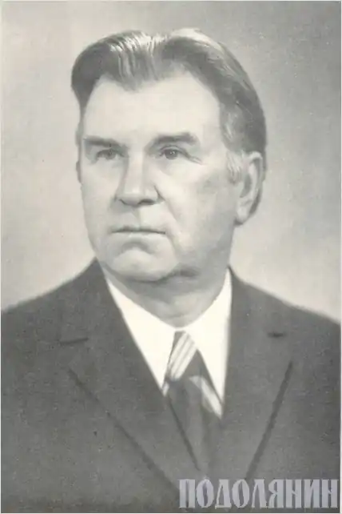

Іван Йосипович Сочивець народився 9 травня 1917 року в с. Лебедівці Козелецького району Чернігівської області в селянській сім'ї.
Життя і творчість талановитого гумориста і сатирика тісно пов'язані із Волочиським краєм.
У 1936 році закінчив хіміко-біологічний факультет Чернігівського інституту. Працював на Поділлі викладачем, директором школи, а згодом — на партійній та журналістській роботі. Учасник Великої Вітчизняної війни, нагороджений орденом Вітчизняної війни другого ступеня, медалями. За журналістську діяльність відзначений Грамотою Президії Верховної Ради України, лауреат Республіканської премії ім. Остапа Вишні (1986), удостоєний почесного звання — заслужений працівник культури Української УРСР. З 1947 по 1950 рік — працював редактором Волочиської районної газети "Зоря". У Волочиську цвіла юність І.Сочивця, гартувалася зрілість, починалась літературна діяльність. Пізніше І.Сочивець працював завідувачем відділу Хмельницької обласної газети "Радянське Поділля", згодом завідувачем відділу газети "Радянська освіта" /нині "Освіта"/ у Міністерстві освіти УРСР. З 1963 року по 1978 рік — завідувач відділу, відповідальний секретар, а згодом — головний редактор журналу "Перець". Як письменник — гуморист видав 28 книжок в Україні та за її межами. Його твори друкувалися російською, білоруською, вірменською, естонською, латвійською, молдавською, німецькою та іншими мовами. Пішов з життя Іван Йосипович Сочивець 16 листопада 2004 року, на 88-му році життя.